Software Engineer
MSc Computer Science (AI/ML Focus)
I’m a Software Engineer at Google, working on Ads/AdMob EngProd, where I build automation and test infrastructure across Android and iOS. I hold a BA from Brown University and an MSc in Computer Science from the University of St Andrews, graduating with First Class Honours with Distinction. Throughout my studies and career, I’ve sharpened my skills in software development, release engineering, data science, and AI, with hands-on experience across Python, Java, JavaScript, TypeScript, SQL, Go, and a range of full-stack and machine learning technologies.
I’m always eager to learn and innovate, constantly seeking opportunities to expand my skill set and make a meaningful impact in the tech industry and beyond. My Master’s dissertation applied machine learning and computer vision to pathology research in mast cell diseases, and I continue to explore how AI and automation can solve real-world problems. I’m excited to keep applying my expertise and contribute to groundbreaking technologies as my career grows.
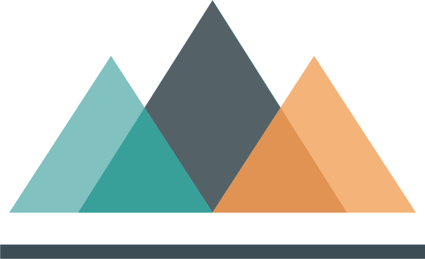
Machine Learning for Pathology in Mast Cell Diseases
University of St Andrews · Jan 2024 – Aug 2024
Mast cell diseases — including hereditary alpha-tryptasemia (HαT) and idiopathic mast cell activation syndrome (i-MCAS) — are notoriously difficult to diagnose, often relying on symptom tracking and treatment response rather than clear biomarkers.
My MSc dissertation at the University of St Andrews explored whether machine learning could help close that gap, applying ML techniques to both pathological clinical data and microbiome data to uncover diagnostic patterns and potential biomarkers for these conditions.
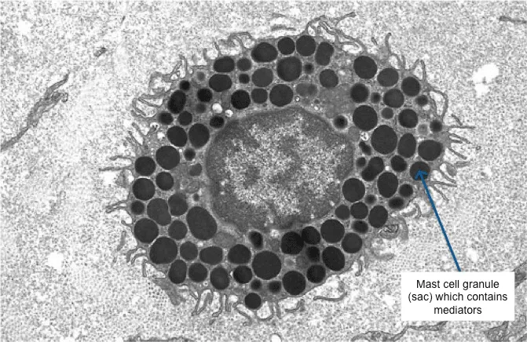
In this dissertation, we applied machine learning techniques to improve the diagnosis and research of mast cell diseases, focusing on idiopathic mast cell activation syndrome (i-MCAS) and hereditary alpha-tryptasemia (HαT). We developed and integrated machine learning models that utilized both pathological tabular data and biopsy images to build a comprehensive proof-of-concept tool. To overcome the challenges of limited datasets, we compared the success of traditional data augmentation and generative models, followed by the training and testing of various machine learning algorithms. Despite identifying some limitations in generating accurate synthetic data, the traditional augmentation method proved more successful. To further explore i-MCAS, I created a tool to analyze microbiome data and investigate microbial discrepancies in i-MCAS. Our proof-of-concept tool demonstrates the potential for machine learning to discover novel patterns in complex pathological data, though we acknowledge the limitations in collecting and integrating image and tabular data. Further refinement and integration into existing diagnostic frameworks is necessary for broader adoption.
Built a standardized preprocessing and EDA pipeline in Python to clean, impute, and engineer features from a small, messy real-world clinical dataset (73 observations, 21 raw features), using domain-informed imputation strategies grounded in published clinical ranges rather than naive defaults.
Compared two data augmentation strategies to address the dataset's small size: a traditional noise-based approach and a GAN-based synthetic data generator. Validated both using Kolmogorov-Smirnov distribution testing, and found that the simpler traditional method preserved real data patterns more reliably than the GAN.
Trained and tuned multiple classifiers (XGBoost, MLP, Random Forest, Gradient Boosting, SVM, Logistic Regression) to distinguish between HαT, MCAS, and normal diagnoses, benchmarking models trained on the original dataset against those trained on the augmented dataset.
Designed and built an end-to-end microbiome analysis pipeline using Human Microbiome Project data as a base: generated synthetic i-MCAS and control cohorts via bootstrapping, then applied K-Means and Gaussian Mixture Model clustering to uncover candidate bacterial biomarkers, cross-validating findings with t-tests.
Built the model application layer (script.py) to standardize preprocessing and apply trained models to new patient data for prediction.
The best-performing tabular models (XGBoost, Random Forest, Gradient Boosting) achieved 93.3% accuracy on the original dataset; after hyperparameter tuning on the augmented dataset (20,000+ samples), XGBoost reached 91.2% accuracy distinguishing HαT, MCAS, and normal patients.
GAN-based augmentation failed statistical validation (KS testing showed distributions did not match the real data), while traditional noise-based augmentation preserved the original dataset's patterns — an important negative result showing not all synthetic data techniques generalize well to small medical datasets.
The microbiome pipeline identified specific bacteria (including Klebsiella pneumoniae strains and Ruminococcus obeum) with significantly different abundances between synthetic i-MCAS and normal samples, with two independent clustering methods (K-Means and GMM) converging on the same groupings — suggesting the approach is picking up genuine structure, not clustering artifacts.
The project's discussion emphasizes its proof-of-concept nature: the goal was to build and validate a reusable ML framework for MCD research, not to produce a clinically deployable diagnostic tool.
ML pipeline predicting small-molecule binding affinity and mutant selectivity against the KIT kinase receptor.
Full-stack social running app with a Vue.js front end, Node.js/Express back end, and MongoDB storage.
Java implementation comparing DFS, BFS, A*, and other search algorithms for pathfinding, with automated performance benchmarking.
Interactive dashboards visualizing California schools' pandemic-era learning models by enrollment, type, and district.
Java game server managing turn-based animal movement, spells, and mythical creatures on a 20x20 board.
Vector graphics editor built in Java Swing with undo/redo, transforms, and server sync.
Single-page quiz app pulling live questions from the Open Trivia DB API, with lifelines, difficulty-based scoring, and a top-10 leaderboard.
ML pipeline predicting cirrhosis progression, comparing imputation strategies and tuned XGBoost/Scikit-Learn models.
Logical-reasoning agents that solve a Minesweeper-like Mosaic puzzle using SAT solving and probabilistic strategies.
Classification pipeline predicting Tanzanian water pump status, comparing five models with Optuna-tuned hyperparameters.
Spring 2024
Reinforced foundational programming skills while encouraging creativity, building upon the initial programming coursework.
Focused on the practical design and implementation of AI, with techniques in reasoning, planning, and learning. Students implemented AI concepts in software and learned how to evaluate their effectiveness.
Introduced the design and development of visual representations for data exploration and analysis. Focused on principles of visual design, interaction, and evaluation, with practical assignments to reinforce skills.
Covered automated data collection and analysis techniques for large-scale databases. Topics included model selection, tree methods, neural networks, and classification, with an emphasis on practical programming applications.
Fall 2023
Covered the foundational concepts of AI, including logical reasoning, uncertainty, and machine learning. Explored AI philosophies, problem-solving with search, and addressed philosophical issues within AI.
Introduced key software engineering concepts such as development methodologies, high-level specifications, project management, and quality assurance, with an emphasis on ethical and sustainable practices. No programming was required.
Explored techniques for developing dependable socio-technical systems. Emphasized understanding system dependability and applying specialized software engineering techniques for reliable operation.
Strengthened skills in object-oriented design and implementation, essential for advanced programming assignments. Assumed prior programming experience equivalent to a Computer Science degree.
Spring 2023
Explored fundamental computing principles with a focus on data structures, algorithms, and database management.
Lea Brody-Heine lea_brody-heine@alumni.brown.edu
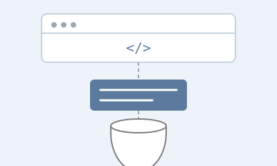
Tech Stack
Skills Gained
A social running platform where users schedule group runs, log completions, and track performance over time. Built with a Vue.js front end, a Node.js/Express REST API, and MongoDB (via Mongoose) for persistence.
Key Features
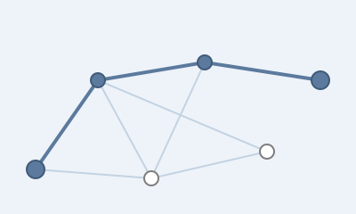
A comparative implementation of classic search algorithms — DFS, BFS, Best-First, A*, SMA*, and IDS — for pathfinding between locations on a simulated grid map, with an automated benchmarking suite to measure and compare their performance.
Interactive dashboards visualizing how California schools' pandemic-era learning models (in-person, hybrid, remote) varied by enrollment, school type, and district, filterable across time period and geography.
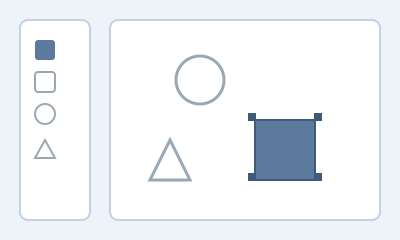
A Java Swing vector graphics editor following the Model-Delegate design pattern, supporting shape creation, transforms, and server-synced drawings.
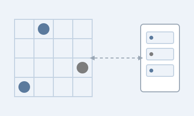
A Java game server managing turn-based logic, player state, and networked communication for a strategy board game where players guide animals across a 20x20 grid while avoiding mythical creatures.
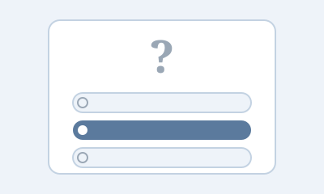
A single-page trivia quiz app pulling live multiple-choice questions from the Open Trivia DB API, with difficulty-based scoring, a bonus double-points category, three lifelines, and a persistent leaderboard.
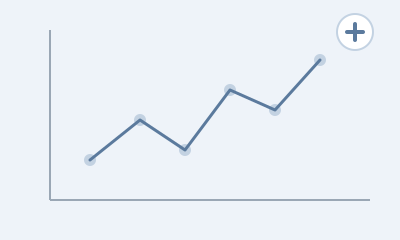
Machine learning models predicting cirrhosis progression from patient data, with a dedicated notebook comparing missing-data imputation strategies before training Scikit-Learn and XGBoost models tuned with Optuna.
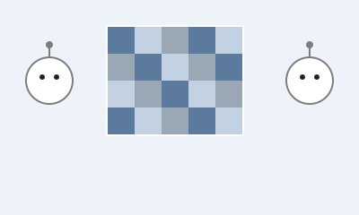
A solver for the Mosaic puzzle (a Minesweeper-style logic game) implementing progressively smarter agents: single-point deduction, SAT-based inference via LogicNG and SAT4J, and a probabilistic strategy for cells with no certain answer.
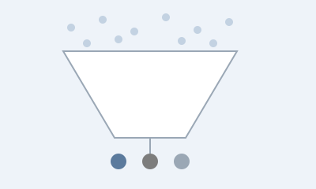
A classification pipeline for DrivenData's "Pump it Up" competition, predicting whether Tanzanian water pumps are functional, non-functional, or in need of repair, benchmarking encoding/scaling combinations and five model families with Optuna-tuned hyperparameters.
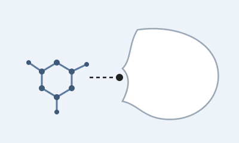
A work-in-progress project predicting small-molecule binding affinity against the KIT kinase receptor and exploring mutant (D816V) vs. wild-type selectivity — the key therapeutic distinction between systemic mastocytosis (needs mutant-selective inhibitors) and other mast cell diseases (needs wild-type suppression).